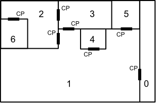

Home Page
F.A.Qs
Statistical Charts
Past Contests
Scheduled Contests
Award Contest
| Online Judge | Problem Set | Authors | Online Contests | User | ||||||
|---|---|---|---|---|---|---|---|---|---|---|
| Web Board Home Page F.A.Qs Statistical Charts | Current Contest Past Contests Scheduled Contests Award Contest | |||||||||
|
Language: Panic Room
Description You are the lead programmer for the Securitron 9042, the latest and greatest in home security software from Jellern Inc. (Motto: We secure your stuff so YOU can't even get to it). The software is designed to "secure" a room; it does this by determining the minimum number of locks it has to perform to prevent access to a given room from one or more other rooms. Each door connects two rooms and has a single control panel that will unlock it. This control panel is accessible from only one side of the door. So, for example, if the layout of a house looked like this:
 with rooms numbered 0-6 and control panels marked with the letters "CP" (each next to the door it can unlock and in the room that it is accessible from), then one could say that the minimum number of locks to perform to secure room 2 from room 1 is two; one has to lock the door between room 2 and room 1 and the door between room 3 and room 1. Note that it is impossible to secure room 2 from room 3, since one would always be able to use the control panel in room 3 that unlocks the door between room 3 and room 2. Input Input to this problem will begin with a line containing a single integer x indicating the number of datasets. Each data set consists of two components:
Output For each dataset, output the fewest number of locks to perform to secure the panic room from all the intruders. If it is impossible to secure the panic room from all the intruders, output "PANIC ROOM BREACH". Assume that all doors start out unlocked and there will not be an intruder in the panic room. Sample Input 3 7 2 NI 0 I 3 0 4 5 NI 2 1 6 NI 2 1 2 NI 0 NI 0 NI 0 7 2 I 0 NI 3 0 4 5 NI 2 1 6 I 2 1 2 NI 0 NI 0 NI 0 4 3 I 0 NI 1 2 NI 1 0 NI 4 1 1 2 2 Sample Output 2 PANIC ROOM BREACH 1 Source |
[Submit] [Go Back] [Status] [Discuss]
All Rights Reserved 2003-2013 Ying Fuchen,Xu Pengcheng,Xie Di
Any problem, Please Contact Administrator